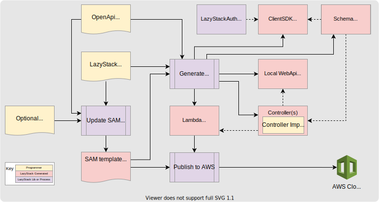

Getting Started
It all starts with a REST OpenAPI specification (formerly Swagger). This defines your client facing API including
the operations and data schema your client may use on the API. This is where you spend most of your time using
LazyStack because the OpenAPI specification is used to guide the generation and update of the code projects
that make up your stack and update the SAM template file so that stack can be deployed to AWS.

You drive what is generated by supplying:
- OpenApi Specification - your OpenApi REST specification.
- LazyStack.yaml - LazyStack generator directives.
- Optional AWS template - define additional AWS resources to merge into serverless.template.
- Controller Implementation - implement service-side methods.
- Client Application - one or more client applications.
After generation you add service-side code to implement the Controllers. You then debug locally using the
local WebApi project. Finally, you use the AWS Serverless Extension to publish your stack to AWS. To update your
stack you make changes to the input files and run the generator again.
Prerequisites
- AWS Account
- AWS CLI installed and/or AWS Visual Studio Extension
- Visual Studio and/or .NET Core CLI
LazyStack Visual Studio Extension Installation and Use
Install LazyStack from the Visual Studio Marketplace. Once installed, a new Tools/Invoke
LazyStack menu item will be available. In addition, a new project template "LazyStackWebApi Template"
is also available. LazyStack is very simple to use. Our Tutorial takes you through all the steps but here are the
steps in brief:
- Install the AWS Toolkit for Visual Studio from the visual Studio Marketplace.
- Install LazyStack Visual Studio Extension from the Visual Studio Marketplace.
- Create a new project using the LazyStackWebApi Template.
- Author an OpenApi specification for your application stack and place it in the solution folder.
- Place any required LazyStack Directives in the LazyStack.yaml configuration file.
- Use the "Tools/Invoke LazyStack - Generate Projects" menu option. Application projects will be generated.
- Implement service-side application code for the the generated Controller Interfaces.
- Create a client application that uses the generated application ClientSDK.
- Right-click on the generated serverless.template file in solution folder and select Publish to AWS Lambda
- Use the "Tools/Invoke LazyStack - Generate AWS Client Settings File(s)" menu option. Settings files will be generated.
- Update client application to reference settings file.
- Test your service-side application code using the local WebApi and/or AWS Stack.
Our Tutorial takes you through all these steps in detail.
.NET Core CLI tool installation
todo ...